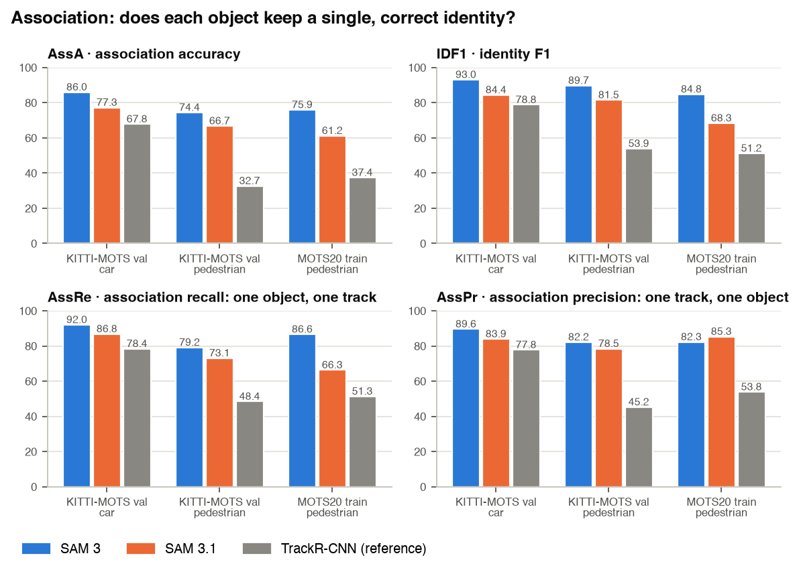
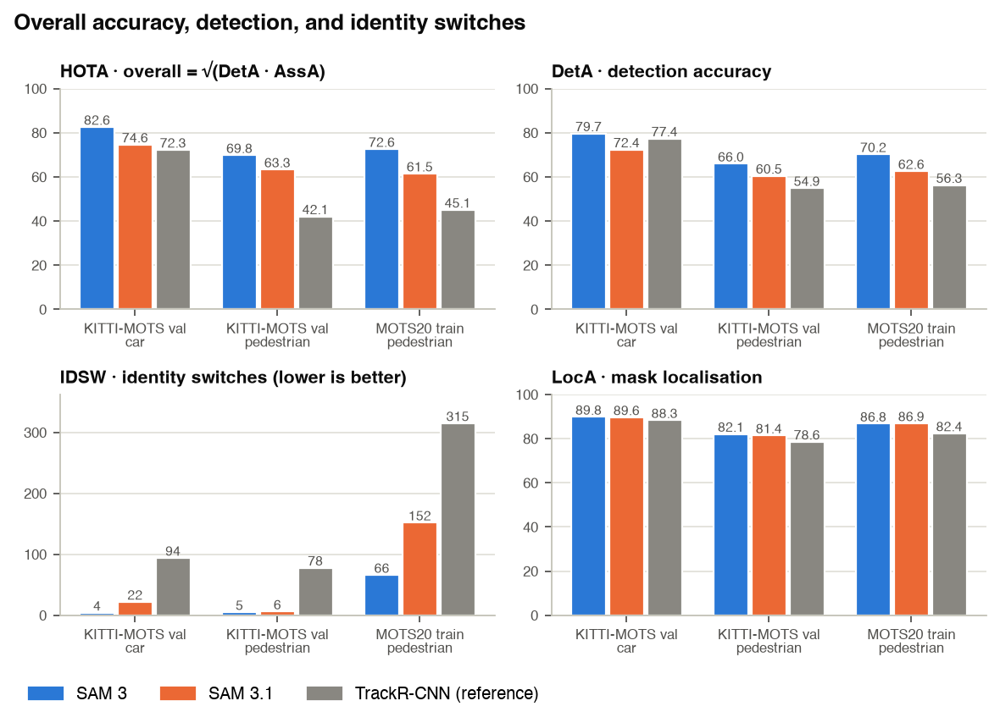
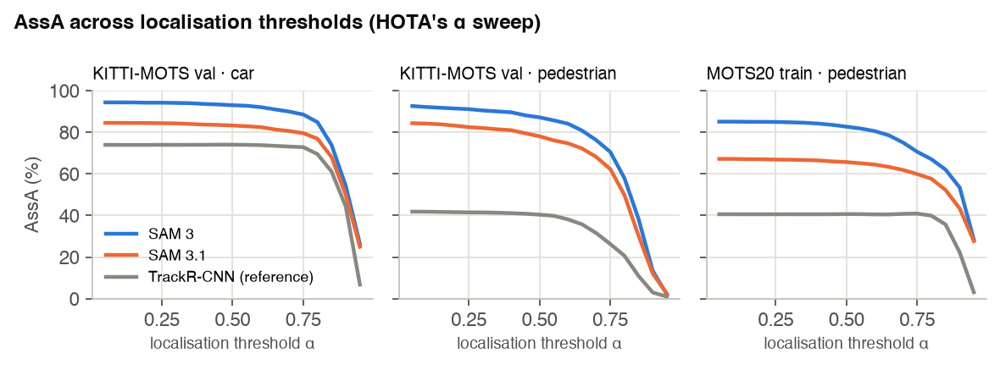
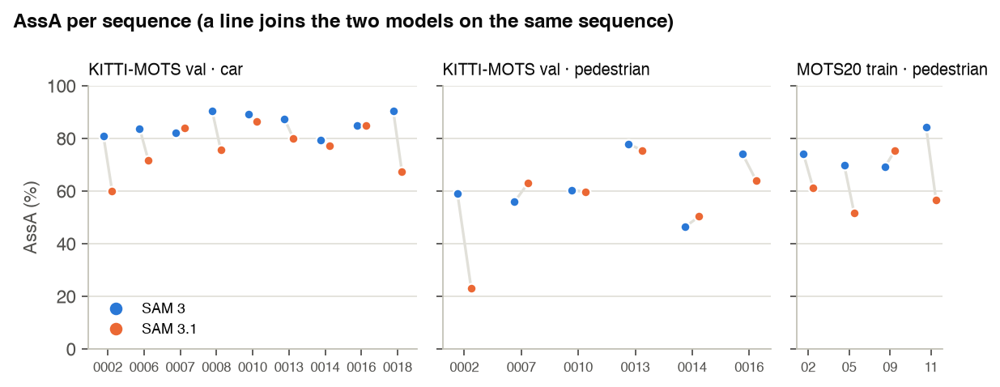

Implication for occlusion: SAM 3.1's MOTS20 loss is objects being split into new tracks, which is what happens when identity is not recovered after an occlusion. The next step measures that directly, using MOT17's per-frame visibility labels.
AssA (association accuracy) measures how consistently each ground-truth object is followed by one predicted identity across its lifetime, over all correctly detected frames. It is the part of HOTA that occlusion stresses. AssRe penalises one object being split into several tracks; AssPr penalises one track covering several objects.

HOTA is the geometric mean of detection (DetA) and association (AssA) accuracy, averaged over localisation thresholds α = 0.05 … 0.95. A tracker can lose HOTA by finding fewer objects (DetA) or by breaking their identities (AssA).



Bold = better of SAM 3 / SAM 3.1. IDSW = identity switches, Frag = track fragmentations, IDs / GT_IDs = number of predicted / ground-truth identities. sMOTA is TrackEval's name for sMOTSA. ms / frame = end-to-end inference time on one A100 80GB including all prompts (several workers shared the GPU, so absolute times are indicative only).
| HOTA | DetA | AssA | AssRe | AssPr | LocA | IDF1 | IDSW | Frag | sMOTA | MOTA | IDs | GT_IDs | ms / frame | |
|---|---|---|---|---|---|---|---|---|---|---|---|---|---|---|
| SAM 3 | 82.6 | 79.7 | 86.0 | 92.0 | 89.6 | 89.8 | 93.0 | 4 | 55 | 78.8 | 89.7 | 156 | 151 | 1232 |
| SAM 3.1 | 74.6 | 72.4 | 77.3 | 86.8 | 83.9 | 89.6 | 84.4 | 22 | 68 | 67.9 | 78.7 | 168 | 151 | 715 |
| TrackR-CNN (reference) | 72.3 | 77.4 | 67.8 | 78.4 | 77.8 | 88.3 | 78.8 | 94 | 145 | 76.2 | 87.8 | 173 | 151 | – |
| HOTA | DetA | AssA | AssRe | AssPr | LocA | IDF1 | IDSW | Frag | sMOTA | MOTA | IDs | GT_IDs | ms / frame | |
|---|---|---|---|---|---|---|---|---|---|---|---|---|---|---|
| SAM 3 | 69.8 | 66.0 | 74.4 | 79.2 | 82.2 | 82.1 | 89.7 | 5 | 49 | 62.0 | 79.9 | 75 | 68 | 1232 |
| SAM 3.1 | 63.3 | 60.5 | 66.7 | 73.1 | 78.5 | 81.4 | 81.5 | 6 | 51 | 53.4 | 71.0 | 74 | 68 | 715 |
| TrackR-CNN (reference) | 42.1 | 54.9 | 32.7 | 48.4 | 45.2 | 78.6 | 53.9 | 78 | 113 | 46.8 | 65.1 | 72 | 68 | – |
| HOTA | DetA | AssA | AssRe | AssPr | LocA | IDF1 | IDSW | Frag | sMOTA | MOTA | IDs | GT_IDs | ms / frame | |
|---|---|---|---|---|---|---|---|---|---|---|---|---|---|---|
| SAM 3 | 72.6 | 70.2 | 75.9 | 86.6 | 82.3 | 86.8 | 84.8 | 66 | 450 | 67.1 | 81.0 | 230 | 228 | 1237 |
| SAM 3.1 | 61.5 | 62.6 | 61.2 | 66.3 | 85.3 | 86.9 | 68.3 | 152 | 377 | 56.9 | 68.9 | 300 | 228 | 1025 |
| TrackR-CNN (reference) | 45.1 | 56.3 | 37.4 | 51.3 | 53.8 | 82.4 | 51.2 | 315 | 712 | 52.7 | 66.9 | 180 | 228 | – |
Per-sequence values for every metric: results_per_sequence.csv. Raw TrackEval outputs are kept on the pod.
Fixed before any result was produced (30 Sep 2026). Primary question: association:
how well does each model keep an object's identity over time (the property that matters
under occlusion)? HOTA decomposes into detection (DetA) and association (AssA); we report
both, with AssA / AssRe / AssPr, IDF1 and ID switches as the primary association measures.
| benchmark | split | sequences | frames | classes |
|---|---|---|---|---| | KITTI-MOTS | val (official MOTS val split) | 0002 0006 0007 0008 0010 0013 0014 0016 0018 | 2,981 | car, pedestrian | | MOTSChallenge (MOTS20) | train | MOTS20-02 05 09 11 | 2,862 | pedestrian |
Ground truth and seqmaps: TrackEval's official data.zip
(sha256 148a4bdf56f8cb32f9bde4b3d70717242cbb2e61900ef0101abc4652e268f2a5).
Images: official KITTI tracking image_02 PNGs and MOTS20 JPEGs, unmodified.
TrackEval, upstream JonathonLuiten/TrackEval @ 12c8791b303e0a0b50f753af204249e622d0281a,
official scripts run_kitti_mots.py / run_mots_challenge.py, default settings
(metrics HOTA, CLEAR, Identity), in an isolated environment with the repository's pinned
requirements: Python 3.8.20, numpy 1.18.1, scipy 1.4.1, pycocotools 2.0.2, matplotlib 3.2.1.
All four evaluations run the official scripts through trackeval_run.py, which only raises
Python's csv field-size limit (default 131,072 characters) before executing the script unchanged:
four valid lines of SAM 3.1's MOTS20-11 output (one track, frames 468-485, a mask broken into up
to ~3,000 fragments) exceed it.
Validation of the evaluation setup: the official TrackR-CNN outputs shipped in
data.zip reproduce the published values (Voigtlaender et al., CVPR 2019): KITTI-MOTS
val sMOTSA 76.2 / 46.8 and MOTSA 87.8 / 65.1 (car / pedestrian); MOTS20 train sMOTSA 52.7.
TrackR-CNN is reported as a reference row.
| | SAM 3 | SAM 3.1 |
|---|---|---| | builder |build_sam3_video_predictor()|build_sam3_multiplex_video_predictor(max_num_objects=128, use_fa3=False)| | checkpoint |facebook/sam3sam3.pt, sha2569999e2341ceef5e136daa386eecb55cb414446a00ac2b55eb2dfd2f7c3cf8c9e|facebook/sam3.1sam3.1_multiplex.pt, sha2560567debeec80ba4ac6369540c6c248025283cb3ff2b92827509e57e2b3541cb6| | output threshold | 0.5 (default) | 0.5 (default) | | deviations from defaults | none (SAM 3's own tracking capacity ismax_num_objects=10000, i.e. unlimited) |max_num_objects=128: the model class's own default ("should be able to cover nearly all cases"); the builder's 16 equals the densest ground-truth frame (MOTS20: 16 pedestrians) and would cap SAM 3.1 exactly where association is hardest.use_fa3=False: FlashAttention 3 requires an H100 (hardware, not method). |
Inference flow per sequence and prompt (official): start_session on the frame folder →
reset_session → add_prompt(text, frame 0) → propagate_in_video → close_session.
Prompts are the benchmark class names: car, pedestrian (KITTI-MOTS); pedestrian
(MOTS20). No tuning on these benchmarks; every parameter above was fixed in advance.
One line per object and frame: frame id class_id img_h img_w rle (COCO compressed RLE),
class_id 1 = car, 2 = pedestrian, id = class_id * 1000 + SAM object id. KITTI frames
0-based, MOTS20 1-based (each benchmark's convention). The format requires
non-overlapping masks: overlapping pixels are assigned to the higher-confidence object;
objects left with no pixels are dropped (counts recorded per sequence in run_info.json).
NVIDIA A100 80GB PCIe (driver 595.91.07); SAM environment Python 3.12.3, torch
2.14.0+cu130, numpy 1.26.4; Meta sam3 code from the research repository at commit
e61d7a5.
Execution (throughput only; no effect on model inputs, parameters or outputs): several
worker processes per model share the GPU and take sequences from a common queue,
longest first; each process is limited to 8 CPU threads (OMP_NUM_THREADS=8; the
default of one thread per core on the 252-core host made SAM 3 CPU-bound at 5.2 s/frame
with the GPU idle); sessions use the official offload_video_to_cpu=True request option
(decoded frames held in host memory), SAM 3.1 additionally the tracker's official
offload_output_to_cpu_for_eval; and after each frame is returned, the model's cache of that
frame's full-resolution masks (cached_frame_outputs, otherwise kept on the GPU for the whole
video; >80 GB on 1080p MOTS20) is moved to host memory. Verified output-neutral: KITTI-MOTS
0014 re-run with the offloads is byte-identical to the run without, for both models
(verify_cache_offload.py). SAM 3.1 KITTI-MOTS 0002 and 0006 were produced
before this change with a single process (run_info_initial.json). Loading reports 64 "missing keys" named *.attn.freqs_cis_{real,imag}: these
are rotary-position tables computed at initialisation, not learned weights (benign).